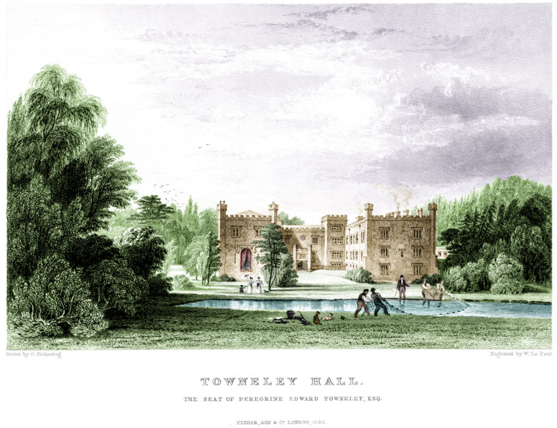
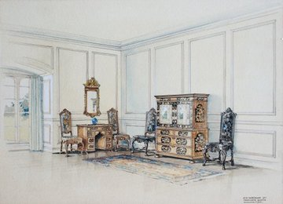
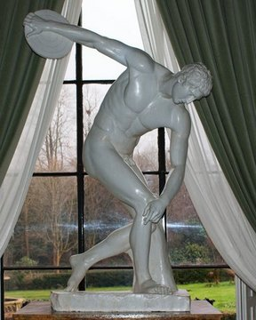

Towneley from A to Z
Towneley from A to Z is for anyone who wants to know more about the history of the house, the family who once lived there and how the museum and its collections developed after it was opened to the public in 1903. A starting point for any accredited museum is a statement of purpose that defines why the museum exists and who it is for. The content of Towneley from A to Z is structured to reflect Towneley’s statement of purpose.
The collection records
A to Z provides an overview of the collections. The collection records, extracts from the Modes database, provide specific information about individual objects, such as when and how they were acquired, together with images of all the fine and decorative arts collections.
The fine arts collection
Most of Towneley's sculpture and oil paintings can be seen on the Art UK web-site. Here you can also browse through the collections of works on paper as well as all of the oil and sculpture collections. You can curate and save your own exhibition by selecting individual objects.
